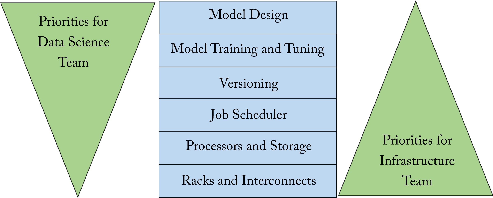
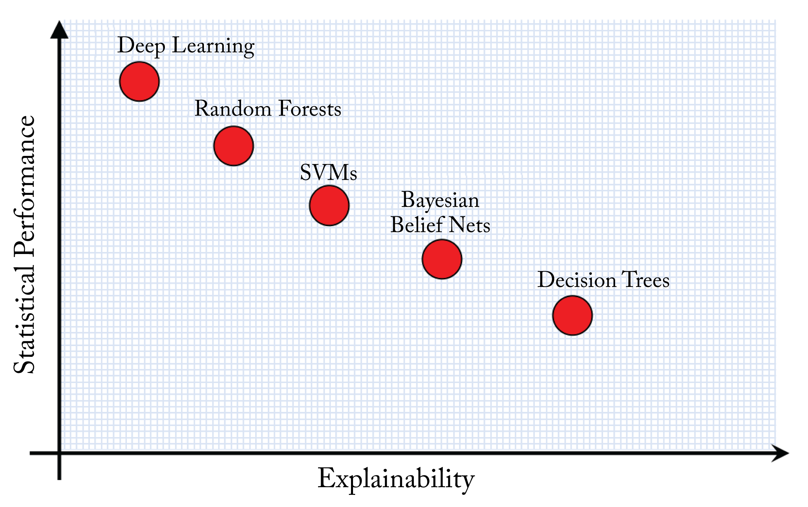

Chapter 10: Opportunities and Challenges
In this concluding chapter, we discuss some of the opportunities and challenges ahead. The opportunities include using ML techniques to improve various aspects of the overall DL system. The challenges include security, interpretability, and the potential negative social impact, such as polarization, unemployment, power consumption, and copyright violations. We then provide some concluding remarks.
10.1 Machine Learning for DL Systems
ML (in particular, RL) can improve DL systems across various levels of the system stack. While more advances are needed to broadly use ML for DL system design, the success of MuZero finding good solutions in a huge search space suggests that similar techniques can provide solutions to other domains with large search spaces. These domains include integrated circuit designs, graph and primitive compilations, efficient and accurate topology designs, server and cluster configurations, and data center operations [YSE+20; SAH+20]. While ML for DL systems is a promising area, most of the work is in early stages, with limited adoption in production. Some areas where ML has been useful are [ZL17; HLL+19; RZQ+19; CMJ+18; MYP+19; KBC+18; WWS+19; MGP+18; WYL+20; EG16]:
-
Integrated circuit (IC) design, which currently relies heavily on a human expert's experience and intuition.
-
AutoML and NAS, discussed in more detail below.
-
Transfer learning via Meta-learning.
-
Schedule space search.
-
Weight initialization.
-
Layer quantization based on latency, energy, and accuracy requirement.
-
Model compression.
-
Index data structures (faster and with less memory than B-Trees and Bloom filters).
-
Device placement for model parallelism.
-
Power reduction in hyperscale data centers.
AutoML is the field of using ML to learn a DL model, tune the hyperparameters of an existing model, or compress a model. AutoML can reduce the data scientist's burden in model searching or parameter tuning at the expense of significant additional computations. Neural architecture search (NAS) is an area within AutoML that learns a model for a particular task, dataset, and hardware target by searching a constraint space of models or a subgraph within a larger graph. In practice, transfer learning is a more common technique used in production. In the future, hyperscalers may use NAS-based techniques to learn good models for a particular hardware architecture. Smaller companies can then use transfer learning on those learned models or use meta-learning methods, discussed later in this section.
Prominent NAS models are as follows: NASNet uses RL to learn an architectural building block using a smaller dataset (CIFAR-10) and then transfers that learned building block to learn a model using a more complex dataset (ImageNet) [ZL17]. NASNet has a superior Pareto curve on accuracy vs. the number of operations compared to human-designed models. AmoebaNet uses evolutionary algorithms to search the space faster than RL [RAH+19]. EfficientNet and EfficientDet are a family of models that uses a base network that scales across depth and width with better Pareto curve than NASNet and AmoebaNet [TL19; TPL19].
Differentiable architecture search (DARTS) assumes a continuous (differentiable) space of solutions, which enables the use of gradient-based optimizers. Adding regularization improves generalization [LSY19; ZES+20]. ProxylessNAS and FBNet use differentiable NAS applied to ConvNets to simultaneously learn the weights and the model for mobile phones deployment that are faster, smaller, and equally or more accurate than MobileNetV2 [CZH19; WDZ+19].
NAS-based techniques can reduce the number of required computations for a given topology. Efficient Neural Architecture Search (ENAS) uses Policy Gradient to learn a subgraph within a larger predefined graph [PGZ+18].
Meta-learning, also known as learning to learn and few-shot learning, is a form of transfer learning that learns a model from a few data samples by transferring knowledge from past learning experiences. The motivation is that knowledge learned from one task should benefit a different task; this is how humans learn.
There are two common approaches to meta-learning: metric-based where data samples are compared in a learned metric space (similar to nearest-neighbor classifiers) [VBL+17; SSZ17; LMR+19] and gradient-based where the model uses an update rule dictated by a meta-learner [MY17; FAL17; RRS+19; AES19]. A third approach combines these two approaches [FRP+20].
10.2 Democratizing DL Platforms
Several companies and cloud service providers developed higher-level platforms on top of the popular frameworks to facilitate a model's life cycle: data preparation, topology exploration, experiment tracking, model packaging, and model deployment at scale. At-scale deployment often uses Kubernetes (k8s) clusters or Spark clusters. These platforms provide a collaborative and secure environment and access to the latest ML libraries. These platforms are designed to meet the needs of the data scientists and the infrastructure teams, which typically have different priorities, as illustrated in Figure 10.1. Some of platforms are open-sourced. In the remainder of this section, we mention existing platforms that companies can adopt or emulate.
 Figure 10.1: The data science and infrastructure teams have different priorities. Based on [BCC+19].
Platforms used for first-party users (that is, internal company users as opposed to third-party users, such as the external customers of cloud service providers) are as follows [HBB+18; Goo20e; Mic20; AAB+19; KR19; HDB17; HM19; Eid18; Met19; Met19b]:
-
Facebook FBLearner
-
Google TF Extended (TFX)
-
eBay Krylov
-
Uber Michelangelo
-
AWS Eider
Platforms provided by cloud service providers for third-party users are as follows [Ama20; Goo20d; Mic20b; Ali20]:
-
Amazon Sagemaker
-
Google Cloud AI Platform
-
Microsoft Azure cognitive services
-
Alibaba PAI
Some of the above platforms can be deployed on-premise to facilitate switching between on-premise and on-cloud. Platforms targeting enterprises are as follows [Mlf20; Cor20; Nvi20; Int20c; Gui20; Ber19]:
-
Intel Analytics Zoo
-
Nvidia RAPIDS
-
Databricks MLflow (to create models)
-
Cortex (to deploy models at scale)
-
UC Berkeley RISE Ray
Some platforms facilitate the development and training of new models or the consumption of industry pre-trained models. As DL becomes widely adopted across industries, these platforms may become more critical.
10.3 Security
Security expands all parts for the DL system stack from hardware to model robustness to data privacy. Attacks are increasing in scale and sophistication. In this section, we discuss two areas of active research: (1) adversarial ML and (2) data and model privacy. Although not discussed in further detail, DL is also used to improve security in domains, such as fraud detection, malware detection, vulnerability detection, and software verification [XLF+18; HDS+19].
Adversarial machine learning is the study of learning and preventing attacks. Adversarial attacks use tuned signals designed to deceive the model into producing a different than expected output. To illustrate, a correctly classified bus image can be imperceptibly perturbed to deceive a model to label it as an ostrich [SZS+14]. Adversarial attacks put in jeopardy applications where safety or security is critical, such as autonomous driving and biometric authentication.
Compressing a model makes it more vulnerable to these attacks by enlarging the magnitude of the adversarial noise [GWY+19; LGH19]. Training models robust to adversarial attacks can require larger models to converge to flatter minima (see Section 4.1), which in turn may require more computational resources [TSE+19].
There are two types of adversarial attacks: white-box and black-box attacks. In white-box attacks, the attacker knows the details of the target models, and in black-box attacks, the attacker does not have these details. Several techniques have been developed (none of them bulletproof) to increase robustness to adversarial attacks, including the following [ACW18; PMW+16; XEQ17; MC17; TKP+18; DAL+18; MMS+19; Nak19; LGH19; BV20; XZZ20]:
-
defensive distillation to reduce the amplitude of the gradients, known as gradient masking, and smooth the model;
-
reducing the bits per pixels in the input image and using spatial smoothing;
-
training a model to modify adversarial examples, so they are correctly classified;
-
augmenting the training dataset with adversarial examples;
-
using models with larger capacity (more weights) than needed;
-
optimizing robustness at smaller numerical representations;
-
iteratively training a model with an adversary; and
-
using the \(k\)-winners-take-all activation function.
Generative attacks use generative models to generate realistic data samples. These samples can deceive an authentication system or a human into believing the data is real. Mor et al. provide optimal strategies for the attacker and the authenticator systems and provide insights to design models robust to attacks [MPG+20].
Privacy is an area of active research. Key areas focused on preserving privacy are federated learning, GAN cryptography, homomorphic encryption, secured multiparty computations, and differential privacy.
Federated learning, discussed in Section 5.3, ensures that data stays local and is not transmitted to a centralized location. Training happens locally, and only the model updates are transmitted. However, some information about the local training data can be extracted from local updates [HAP17]. The updates should be encrypted before transmission and unencrypted only after the centralized location receives multiple models to preserve privacy [BIK+17].
GAN cryptography can facilitate training models that perform encryption and decryption [ACG+16]. Intel is developing homomorphic encryption tools to facilitate building models that operate on encrypted data. Homomorphic encryption methods, in theory, enable training and serving models using encrypted data; in practice, they require enormously more computations [Gen09]. Another more computationally feasible method is secure multiparty computations (SMPC), where parties jointly compute functions without revealing their inputs and outputs [ZZZ+19].
Differential privacy is an area of active research to train models without compromising the privacy of the training dataset [AA16; JYv19; LAG+19; DJS20; Goo20b; WZL+19]. Large models can memorize training data, and attackers may be able to extract information from a trained model. To illustrate, using a sentence completion tool an attacker types "The bank account of Amy Jones is", and the tool may regurgitate the actual account number if it is in the training dataset. To mitigate this vulnerability, Apple uses differential privacy technology adding some noise to the data in a user's device before such data is transmitted to Apple.
10.4 Interpretability
Interpretability is an area of active research to explain the reasons for the decisions, biases, and limitations of a given model. Limited interpretability is a barrier for some industries adopting DL algorithms despite their higher statistical performance. For instance, online credit applications should provide the reasons that a given loan was accepted or rejected. This right-to-explanation is required in some legal systems.
 Figure 10.2: Algorithms that are more interpretable typically have lower accuracy. Note this is not shown to scale, but rather is a generalization of the algorithms' interpretability. Based on [Gun17].
Interpretability methods can be applied to a topology using attention. Attention-based models learn to focus on the relevant inputs to produce a given output, which results in superior statistical performance while simultaneously provides interpretable insights [AP19; KZK+19; SLA+19].
BNN combine the strength of NNs and Bayesian models to estimate the uncertainty of a NN prediction [Nea95]. They can estimate uncertainty and provide performance guarantees. However, they are computationally expensive and require a good prior approximation to make them useful. BNNs are an active field of research.
An already trained model may be interpreted using activations, a saliency map, and testing concept vectors as follows: visualizing the activation features can provide insights into what a neuron or group of neurons learned but provides no insights into why a decision was made [ZF13; OSJ+18].
Another approach is using saliency maps to measure the impact of each input \(x_i\) in the output \(p(z): \frac{\partial p(z)}{\partial x_i}.\) Salient maps are used in various domains, including in RL to gain insights on the behavior of learned agents [GPV+20]. However, saliency map methods may lack reliability [AGM+18; HEK+19].
Google developed testing concept activation vectors (TCAV) to quantify the importance of user-defined concepts in a model's output [KWG+18; Goo20f]. TCAV learns concepts from examples. For instance, to determine the importance of stripes in classifying an image as a zebra, a concept is learned using images of stripes, and then TCAV can test the model using this learned concept. A current limitation is that the user needs to determine which concepts to test and needs training samples to learn the concept.
Another aspect of interpretability is giving users information about the training of the model. This information includes the objective function (what the model is mathematically designed to do), and the type of training data [MWZ+19; GMV+20]. Model developers should explain where the model works and where it fails and possible biases in the model. Google calls this the model card. This level of transparency is vital to accelerate DL adoption and mitigate misuse or unintended consequences. The Partnership on AI is one effort in this direction. University of Washington's LIME and Google's What If Tool provide tools to analyze a model to assist in this effort.
10.5 Society Impact
Artificial intelligence is improving multiple facets of society. Advances in DL and technology are connecting the world. The monetary cost to communicate with people from around the world is small and continues to decrease. NLP algorithms are breaking language barriers; in the near future, persons without a common language may communicate in real-time with neural speech-to-speech interpreters. In some areas, however, DL has a negative impact, and society should address them. In this section, we briefly discuss crucial areas: polarization, algorithmic fairness, unemployment, power consumption, and copyright violations.
DL is contributing to the polarization of society through personalized content. Companies that provide social media, news feeds, online videos, and other similar services, may optimize a metric related to maximizing user engagement. The result is content that reinforces, rather than challenges, personal views limiting exposure to diverse postulations. In the author's opinion, this limited exposure is the biggest threat that DL imposes to society because it can reverse the progress toward a more empathetic society. It is unclear how to address this challenge, given the monetary incentives to maximize user engagement, and the competition between various content providers. Facebook works to reduce the amount of content that could drive polarization; however, the specific ways are not publicly disclosed.
Data and algorithmic bias is a substantial issue in several production DL systems with detrimental effects [LDR+18]. Training data is often skewed toward a demographic and incorporates human biases [BCZ+16]. Model developers should strive to collect unbiased data, and provide a model card (discussed in Section 1.4). For instance, all other factors being equal, a loan application should produce the same output across gender and race.
An area in which DL usually breaks down is in behavior prediction, such as recidivism, job success, terrorist risk, and at-risk kids [Nar19]. Given the current limited interpretability and biases in datasets, these types of behavior prediction applications should be avoided.
The community is developing tools to improve fairness. In addition to the tools mentioned in Section 1.4 for interpretability, IBM's AI Fairness 360 Toolkit can examine, report, and mitigate discrimination and bias in DL models using dozens of fairness metrics.
Technology advances increase human productivity and reduce the amount of human labor required to produce a set of goods. On the one hand, this increased productivity can result in shorter work hours, higher pay, and cheaper goods. On the other hand, as the cost of automation rapidly decreases, the need for human labor in various sectors of the economy diminishes. The rapid advancements in automation may result in significant unemployment if not adequately addressed. Some potential solutions are universal income, shorter work hours at higher pay, or re-education programs.
DL models require significant power budgets for training and serving. As they become more prominent in society, their large power consumption can negatively contribute to climate change. Fortunately, there is work-in-progress to develop smaller and more efficient models with smaller power budgets. In addition, DL algorithms are being used to find methods to mitigate climate change [RDK+19].
DL algorithms can be used to generate music, poetry, paintings, and voices and images of real persons using generative models. Models can generate synthetic content, including fake videos of real people. It is not clear how to simultaneously protect the individual rights of those people and the freedom-of-speech rights of the producer of those videos. Another challenge is that the generative model's training datasets can potentially contain copyright material, and it is not clear how to protect the rights of the original authors. In the United States, copyright material can be used to train search algorithms (using discriminative, rather than generative models) [Wik20].
These challenges are also a motivation to expand the public's knowledge of DL so that society can collectively find better ways to address them.
10.6 Concluding Remarks
The adoption of DL systems is rapidly growing and improving many technologies and services. In this book, we covered the algorithms, hardware, and compilers used in large-scale DL production systems by hyperscalers. We analyze the building blocks or primitives of computation graphs or topologies used in commercial applications. We explained the different types of workloads common at hyperscalers, academia, and smaller sized companies and highlighted the importance and prevalence of recommender models. We provided guidelines to train and debug a model so that it generalizes to data outside the training dataset, recommended the Ranger, Adam, SGDM, and LARS optimizers to train a model, and explained how to compute the gradients via backpropagation as a set of multiplications and additions. We highlighted the benefits of finding a batch size that results in high hardware utilization and low time-to-train.
As training times are getting prohibitively long on a single node, and some model sizes exceed a node's memory capacity, distributed training is required and used across hyperscalers. We provided guidelines for distributed training and recommended using a hybrid approach for large models: data parallelism is used across groups of super-nodes, and model parallelism is used within each super-node with \(4\)-\(8\) nodes per super-node. We highlighted pipeline parallelism as a promising approach to improve model parallelism, which is particularly beneficial for hardware platforms with large SRAM attempting to eliminate most DRAM accesses. However, further advances are needed to mitigate stalled weight updates and gain broad adoption.
Memory bandwidth is a common bottleneck in training and serving models. We discussed various smaller numerical formats to reduce the size of the model, which alleviates this bottleneck and results in more FPU units per die area. We recommended that production training hardware support \(bf16\), \(fp16\), and \(fp32\) compute, and inference hardware support \(fp16\), \(bf16\), \(fp8\), \(\mathit{int8}\), and some \(fp32\) compute. We also highlighted the statistical performance penalty when using \(\mathit{int8}\) for various workloads. Hessian-based methods can guide the selection of quantizable layers and mitigate this penalty.
The rapid topology and algorithmic innovation motivate the adoption of a flexible platform that supports a broad spectrum of workloads, including disaggregated CPU to accelerator ratio, a standard form factor module, and an industry-standard interconnect to scale out the architecture. We discussed some of the performance vs. ease-of-programmability tradeoffs across various hardware designs used for DL, including the challenges of software-managed memory and the complexities of extracting high performance.
Central to DL systems are compilers to effectively lower a program to the target hardware. We detailed various optimization passes and highlighted operation fusion and loop tiling as pivotal optimizations to reduce memory accesses and efficiently use local memory. We discussed features in the popular frameworks TensorFlow and PyTorch, as well as the compilers TVM and XLA and others. Advancing compilers are critical to facilitate entry and competitiveness in the ecosystem.
We are in the early days of DL systems with exciting avenues to pursue and challenges to overcome. One of the most promising opportunities is using ML algorithms to improve the DL system stack. We reviewed potential ML for DL usages and highlighted some of the challenges the community needs to tackle.
I hope the concepts you learned in this book help you better engage with data scientists, hardware engineers, and compiler and performance engineers to tackle the compute, bandwidth, and memory demands, address the societal challenges, use ML to improve DL systems, and contribute to this exciting field. Thank you for your interest in DL systems and for the time you committed to studying this book.